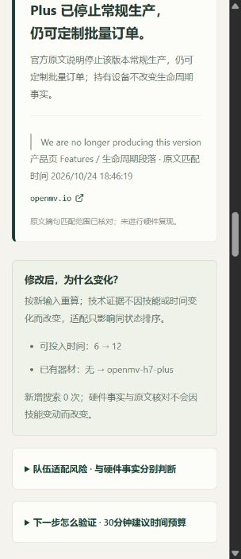

WAYTOAGI 1024 / 侦探赛道
赛芯智选 RaceChip AI · 三案真实查询交付
帮助电赛新生核对硬件参数与工程经验对当前赛题是否适用。三份问题均为自拟场景，查询和原文核对实际执行于北京时间 2026-10-24。原始结果、服务端 RequestId、可点击来源和页面截图随附。
实际完成：3/3 问题、9次案例查询；另有1次连通验证。重算新增请求0次。
本文件是可直接打开的证据索引。完整交互应用见包内README，本机演示 RaceChip 工作台。尚未公开部署、对外分享或正式提交。
CASE A / 真实 SearchPro 记录
OpenMV Cam RT1062 可以安全直接接收5V UART数字信号。
执行时间 2026-10-24T18:46:02.028192+08:00 · 3 次请求 · 30 条搜索线索
原始问题
机器人做颜色识别，主控通过 UART 向 OpenMV Cam RT1062 的数字 UART RX 引脚输出 5V 信号，没有电平转换。有人说这块板可以安全直连5V，请核查官方资料并给出排除理由。
证据冲突本型号官方标注 I/O 输入耐受上限 3.3V；直接输入 5V 超出声明范围，不能按安全兼容接线。
一句话说明：本型号官方标注 I/O 输入耐受上限 3.3V；直接输入 5V 超出声明范围，不能按安全兼容接线。
All I/O pins output 3.3V and are 3.3V tolerant
产品页 Features / 生命周期段落
https://openmv.io/products/openmv-cam-rt核对时间：2026-10-24T18:46:02.024391+08:00 · 摘句匹配，未硬件复现实际检索式、RequestId和搜索来源
- OpenMV Cam RT1062 I/O 3.3V tolerant 5V UART input official documentation
状态 ok · 返回 10 条 · 版本 standard
RequestId: 79f146c5-9ddf-49b8-be6e-907b79634029 - OpenMV Cam RT1062 I/O 3.3V tolerant 5V UART input 适用条件
状态 ok · 返回 10 条 · 版本 standard
RequestId: 6046b276-7b46-465b-88ee-30e045a24878 - OpenMV Cam RT1062 I/O 3.3V tolerant 5V UART input forums engineering experience 实测
状态 ok · 返回 10 条 · 版本 standard
RequestId: 7fb2677b-aec0-49b1-9ab4-a197a954c1c3
搜索线索（尚未全部核对原文）
CASE B / 真实 SearchPro 记录
论坛高帧率例程能保证我的 H7 Plus 加 OV5640 在 AprilTag 完整处理链路达到100 FPS。
执行时间 2026-10-24T18:46:11.424039+08:00 · 3 次请求 · 30 条搜索线索
原始问题
机器人使用 OpenMV Cam H7 Plus 和 OV5640 做离线 AprilTag 检测，希望达到100 FPS。论坛高帧率经验是否能保证我的方案也达到？请检查完整讨论中的传感器和示例条件。
条件不同原帖后续回复限定高 FPS 示例适用于 MT9V034；当前 OV5640、分辨率、AprilTag/传输处理不能直接迁移。没有判定作者造假，也没有本项目实测 FPS。
一句话说明：原帖后续回复限定高 FPS 示例适用于 MT9V034；当前 OV5640、分辨率、AprilTag/传输处理不能直接迁移。没有判定作者造假，也没有本项目实测 FPS。
The higher fps example only works for the MT9V034
论坛完整讨论末尾，2021-06-15回复
https://forums.openmv.io/t/higher-fps-from-openmv-cam-h7-plus-and-mt9v034/5585核对时间：2026-10-24T18:46:11.421739+08:00 · 摘句匹配，未硬件复现实际检索式、RequestId和搜索来源
- OpenMV Cam H7 Plus AprilTag FPS readout control OV5640 official documentation
状态 ok · 返回 10 条 · 版本 standard
RequestId: 89aa4887-24e9-4437-97c0-24822ab4bda5 - OpenMV Cam H7 Plus AprilTag FPS readout control OV5640 未知 适用条件
状态 ok · 返回 10 条 · 版本 standard
RequestId: 45645322-88ee-49d7-b0a5-cb49c93a4830 - OpenMV Cam H7 Plus AprilTag FPS readout control OV5640 forums engineering experience 实测
状态 ok · 返回 10 条 · 版本 standard
RequestId: a5ce46d7-20ba-4261-965d-3febb4433651
搜索线索（尚未全部核对原文）
CASE C / 真实 SearchPro 记录
OpenMV Cam H7 Plus 已停止常规生产，仍可定制批量订单。
执行时间 2026-10-24T18:46:19.375975+08:00 · 3 次请求 · 30 条搜索线索
原始问题
新生做离线颜色巡线，打算使用 OpenMV Cam H7 Plus。听说该型号已经停止常规生产，请核查生命周期原文，并比较已有该板与需要新购时的适配风险。不能把已有板卡当作已完成性能实测。
证据支持官方原文说明停止该版本常规生产，仍可定制批量订单；持有设备不改变生命周期事实。
一句话说明：官方原文说明停止该版本常规生产，仍可定制批量订单；持有设备不改变生命周期事实。
We are no longer producing this version
产品页 Features / 生命周期段落
https://openmv.io/products/openmv-cam-h7-plus核对时间：2026-10-24T18:46:19.374412+08:00 · 摘句匹配，未硬件复现实际检索式、RequestId和搜索来源
- OpenMV Cam H7 Plus no longer producing lifecycle discontinued official documentation
状态 ok · 返回 10 条 · 版本 standard
RequestId: c13de63f-9b05-442d-a8a8-6eb23e750fb7 - OpenMV Cam H7 Plus no longer producing lifecycle discontinued 适用条件
状态 ok · 返回 10 条 · 版本 standard
RequestId: dd764ae7-27ca-46e7-8f48-3ba21da5b04c - OpenMV Cam H7 Plus no longer producing lifecycle discontinued forums engineering experience 实测
状态 ok · 返回 10 条 · 版本 standard
RequestId: ff0b46eb-aa98-45a6-983b-152b708e4788
搜索线索（尚未全部核对原文）
EXPLAINABLE RECALCULATION
已有板卡，改变的是采购风险
将可投入时间6小时改为12小时，并将H7 Plus加入现有器材：同状态内排序和采购风险改变，停产原文和主张状态不变。原始SearchPro资料明确复用，新增搜索请求0次。
查看前后变化的真实重算 JSON